Le traitement numérique des images
Cette page reprend l'article publié sur le site web Images des mathématiques.
Contents
- Installing toolboxes and setting up the path.
- Les pixels d'une image
- Stocker une image
- La résolution d'une image
- Quantifier une image
- Enlever le bruit par moyennes locales
- Enlever le bruit par médiane
- Détecter les bords des objets
- Les images couleurs
- Changer le contraste d'une image
- Transformations géométriques
- Fondu entres deux images
- Conclusion
- Glossaire
Les appareils numériques photographient de manière très précise le monde qui nous entoure. L'utilisateur souhaite pouvoir stocker avec un encombrement minimal ses photos sur son disque dur. Il souhaite également pouvoir les retoucher afin d'améliorer leur qualité. Cet article présente les outils mathématiques et informatiques qui permettent d'effectuer ces différentes tâches.
Cet article présente quelques concepts du traitement mathématique des images numériques. Ces traitements permettent de stocker plus facilement les images et d'améliorer leur qualité. Les mathématiques utilisées dans cet article correspondent au niveau de la classe de troisième. Les mots clés en rouge pointent vers les pages Wikipédia correspondantes. Ils sont repris à la fin de l'article dans un glossaire.
Mot clefs : image, bits, carré, racine carrée, inverse, logarithme, moyenne, médiane.
Installing toolboxes and setting up the path.
You need to download the following files: signal toolbox and general toolbox.
You need to unzip these toolboxes in your working directory, so that you have toolbox_signal and toolbox_general in your directory.
For Scilab user: you must replace the Matlab comment '%' by its Scilab counterpart '//'.
Recommandation: You should create a text file named for instance numericaltour.sce (in Scilab) or numericaltour.m (in Matlab) to write all the Scilab/Matlab command you want to execute. Then, simply run exec('numericaltour.sce'); (in Scilab) or numericaltour; (in Matlab) to run the commands.
Execute this line only if you are using Matlab.
getd = @(p)path(p,path); % scilab users must *not* execute this
Then you can add the toolboxes to the path.
getd('toolbox_signal/'); getd('toolbox_general/');
Les pixels d'une image
Une image numérique en niveaux de gris est un tableau de valeurs. Chaque case de ce tableau, qui stocke une valeur, se nomme un pixel. En notant \(n\) le nombre de lignes et \(p\) le nombre de colonnes de l'image, on manipule ainsi un tableau de \(n \times p\) pixels.
La figure ci-dessous montre une visualisation d'un tableau carré avec \(n=p=240\), ce qui représente \(240\times 240\)=57600 pixels. Les appareils photos numériques peuvent enregistrer des images beaucoup plus grandes, avec plusieurs millions de pixels.
n = 256;
name = 'hibiscus';
f = load_image(name, n);
f = rescale(sum(f,3));
clf;
imageplot(f);
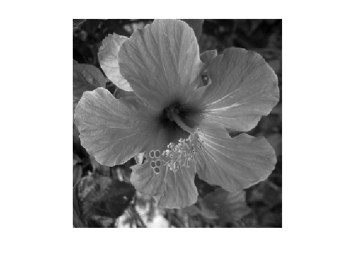 Les valeurs des pixels sont enregistrées dans l'ordinateur ou l'appareil photo numérique sous forme de nombres entiers entre 0 et 255, ce qui fait 256 valeurs possibles pour chaque pixel.
La valeur 0 correspond au noir, et la valeur 255 correspond au blanc. Les valeurs intermédiaires correspondent à des niveaux de gris allant du noir au blanc.
La figure ci-dessous montre un sous-tableau de \(6 \times 6\) pixels extrait de l'image précédente. On peut voir à la fois les valeurs qui composent le tableau et les niveaux de gris qui permettent d'afficher l'image à l'écran.
selx = 19:24; sely = 62:67; clf; image(f(selx,sely)*255); axis image; axis off; disp(floor(255*f(selx,sely)));
43 43 43 41 40 39
48 49 46 42 44 43
110 79 54 47 48 45
190 192 190 153 99 54
150 166 189 203 183 170
131 140 145 161 165 178
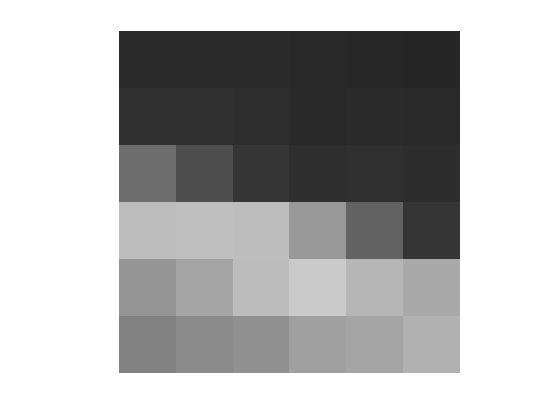 Les valeurs de l'images extraite sont: \[ \left[ \begin{array}{ccc} 43 &43 & 43 & 41 & 40 & 39 \\ 48 &49 & 46 & 42 & 44 & 43\\ 110 & 79 & 54 & 47 & 48 & 45\\ 190 &192 & 190 & 153 & 99 & 54\\ 150 &166 & 189 & 203 & 183 & 170\\ 131 &140 & 145 & 161 & 165 & 178\\ \end{array} \right] \]
Stocker une image
Stocker de grandes images sur le disque dur d'un ordinateur prend beaucoup de place. Les nombres entiers sont stockés en écriture binaire, c'est-à-dire sous la forme d'une succession de 0 et de 1. Chaque 0 et chaque 1 se stocke sur une unité élémentaire de stockage, appelée bit.
Pour obtenir l'écriture binaire d'un pixel ayant comme valeur 179, il faut décomposer cette valeur comme somme de puissances de deux. On obtient ainsi \[ 179=2^7+2^5+2^4+2+1, \] où l'on a pris soin d'ordonner les puissances de deux par ordre décroissant. Afin de faire mieux apparaître l'écriture binaire, on ajoute "\(1 \times\)" devant chaque puissance qui apparaît dans l'écriture, et "\(0\times\)" devant les puissances qui n'apparaissent pas \[ 179=1 \times 2^7 + 0 \times 26 + 1 \times 2^5 + 1 \times 24 + 0 \times 2^3 + 0 \times 22 + 1 \times 2^1 + 1 \times 2^0. \]
Avec une telle écriture, la valeur de chaque pixel, qui est un nombre entre 0 et 255, nécessite \[ \log_2(256) = 8 \text{ bits}. \] La fonction \(\log_2\) est le logarithme en base 2, et ce calcul exprime le fait que \[ 256=2^8 = 2 \times 2 \times 2 \times 2 \times 2 \times 2 \times 2 \times 2. \] L'écriture binaire de la valeur 179 du pixel est ainsi \((1,0,1,1,0,0,1,1)\), où chaque 1 et chaque 0 correspond au facteur multiplicatif qui apparaît devant chaque puissance.
On peut écrire toute valeur entre 0 et 255 de cet manière, ce qui nécessite d'utilisation de 8 bits. Il y a en effet 256 valeurs possibles, et \(256=2^8\). Pour stocker l'image complète, on a donc besoin de \[ n \times p \times 8 \text{ bits}. \]
Pour stocker l'image complète, on a donc besoin de \[ n \times p \times 8 \text{ bits}. \] Pour l'image montrée aux figure précédentes, on a ainsi besoin de \[ 256 \times 256 \times 8 = 524288 \text{ bits}. \]
Pour l'image montrée à la première figure, on a ainsi besoin de \[ 240 \times 240 \times 8 = 460800 \text{ bits.} \] On utilise le plus souvent l'octet (8 bits) comme unité, de sorte que cette image nécessite 57,6ko (kilo octets).
La résolution d'une image
Afin de réduire la place de stockage d'une image, on peut réduire sa résolution, c'est-à-dire diminuer le nombre de pixels.
La façon la plus simple d'effectuer cette réduction consiste à supprimer des lignes et des colonnes dans l'image de départ.
La figure suivante montre ce que l'on obtient si l'on retient une ligne sur 4 et une colonne sur 4.
sub = @(f,k)f(1:k:end,1:k:end); clf; imageplot(sub(f,4));
On a ainsi divisé par \(4 \times 4 = 16\) le nombre de pixels de l'image, et donc également réduit par 16 le nombre de bit nécessaire pour stocker l'image sur un disque dur.
La figure suivante montre les résultats obtenus en enlevant de plus en plus de lignes et de colonnes. Bien entendu, la qualité de l'image se dégrade vite.
klist = [2 4 8 16]; clf; for i=1:length(klist) k = klist(i); imageplot(clamp(sub(f,k)), ['1 ligne/colonne sur ' num2str(k)], 2, 2, i); end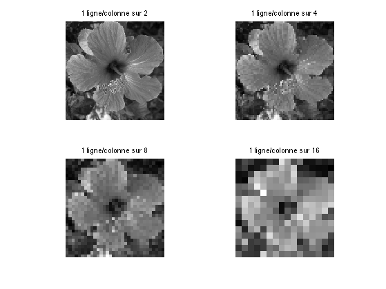
Quantifier une image
Une autre façon de réduire la place mémoire nécessaire pour le stockage consiste à utiliser moins de nombres entirers pour chaque valeur.
On peut par exemple utiliser uniquement des nombres entier entre 0 et 3, ce qui donnera une image avec uniquement 4 niveau de gris.
On peut effectuer une conversion de l'image d'origine vers une image avec 3 niveau de valeurs en effectuant les remplacements:
- les valeurs dans \(0,1,\ldots,63\) sont remplacées par la valeur 0,
- les valeurs dans \(64,1,\ldots,127\) sont remplacées par la valeur 1,
- les valeurs dans \(128,1,\ldots,191\) sont remplacées par la valeur 2,
- les valeurs dans \(192,\ldots,255\) sont remplacées par la valeur 3.
Une telle opération se nomme quantification.
La figure suivante montre l'image résultante avec 4 niveaux de couleurs. Les 4 valeurs sont affichées en utilisant 4 niveaux de gris allant du noir au blanc.
quant = @(f,q)(round(q*rescale(f,1e-3,1-1e-3)-1/2)+1/2)/q;
clf;
imageplot(quant(f,4), '4 niveaux de gris');
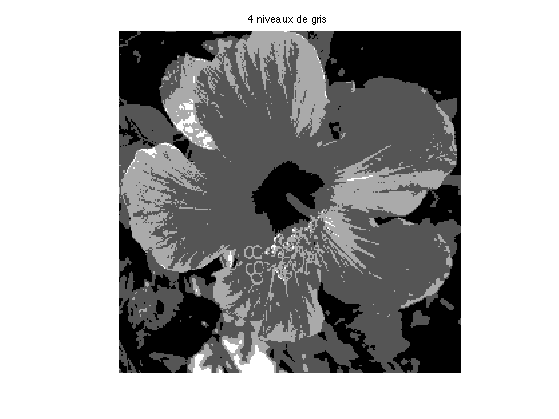 Nous avons déjà vu que l'on pouvait représenter toute valeur entre 0 et 255 à l'aide de 8 bits en utilisant l'écriture binaire. De façon similaire, on vérifie que toute valeur entre 0 et 3 peut se représenter à l'aide de 2 bits. On obtient ainsi une réduction d'un facteur 8/2=4 de la place mémoire nécessaire pour le stockage de l'image sur un disque dur.
La figure suivante montre les résultats obtenus en utilisant de moins en moins de niveaux de gris.
qlist = [16, 4, 3, 2]; clf; for i=1:length(qlist) q = qlist(i); f1 = quant(f,q); f1(1)=0; f1(2)=1; imageplot(f1, [num2str(q) ' niveaux de gris' ], 2, 2, i); end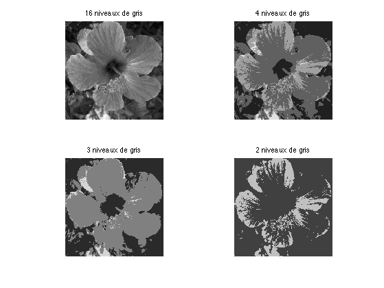
Tout comme pour la réduction du nombre de pixels, la réduction du nombre de niveaux de gris influe beaucoup sur la qualité de l'image. Afin de réduire au maximum la taille d'une image sans modifier sa qualité, on utilise des méthodes plus complexes de compression d'image. La méthode la plus efficace s'appelle JPEG-2000. Elle utilise la théorie des ondelettes. Pour en savoir plus à ce sujet, vous pouvez consuler cet article d'Erwan Le Pennec.
Enlever le bruit par moyennes locales
Les images sont parfois de mauvaise qualité. Un exemple typique de défaut est le bruit qui apparait quand une photo est sous-exposée, c'est-à-dire qu'il n'y a pas assez de luminosité. Ce bruit se manifeste par de petites flucturation aléatoires des niveaux de gris. La figure ci-dessous montre une image bruitée.
name = 'boat';
f = rescale(load_image(name, n));
sigma = .08;
f = f + randn(n)*sigma;
clf;
imageplot(f);
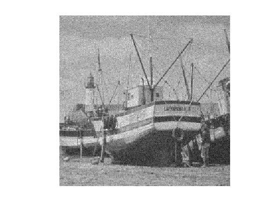 Afin d'enlever le bruit dans les images, il convient de faire subir une modification aux valeurs de pixels. L'opération la plus simple consiste à remplacer la valeur \(a\) de chaque pixel par la moyenne de \(a\) et des 8 valeurs \(b,c,d,e,f,g,h,i\) des 8 pixels voisins de a.
Les valeurs des pixels sont positionnées comme suit : \[ \left[ \begin{array}{ccc} g & c & h \\ b & a & d \\ f & e & i \end{array} \right] = \left[ \begin{array}{ccc} 79 & 54 & 47 \\ 192 & 190 & 153 \\ 166 & 189 & 203 \end{array} \right] \]
On obtient ainsi une image modifiée en remplaçant a par \[ \frac{a+b+c+d+e+f+g+h+i}{9} \] puisque l'on fait la moyenne de 9 valeurs. Dans notre exemple, cette moyenne vaut \[ \frac{190+192+79+54+47+153+203+189+166}{9} \approx 141,4. \] En effectuant cette opération pour chaque pixel, on supprime une partie du bruit, car ce bruit est constitué de fluctuations aléatoires, qui sont diminuées par un calcul de moyennes. La figure ci-dessous montre l'effet d'un tel calcul.
La figure ci-dessous montre l'effet d'un tel moyennage.
filt_moy = @(f,k)perform_convolution(f,ones(2*k+1)/(2*k+1)^2,'sym'); clf; imageplot(clamp(f), 'Image bruitée', 1, 2, 1); imageplot(clamp(filt_moy(f,1)), 'Image moyennée', 1, 2, 2);
Tout le bruit n'a pas été enlevé par cette opération. Afin d'enlever plus de bruit, on peut moyenner plus de valeurs autour de chaque pixel. La figure suivante montre le résultat obtenu en moyennant de plus en plus de valeurs.
klist = [1 2 3 4]; clf; for i=1:length(klist) k = klist(i); f1 = filt_moy(f,k); imageplot(clamp(f1), ['Moyenne de ' num2str((2*k+1)^2) ' pixels'], 2, 2, i); end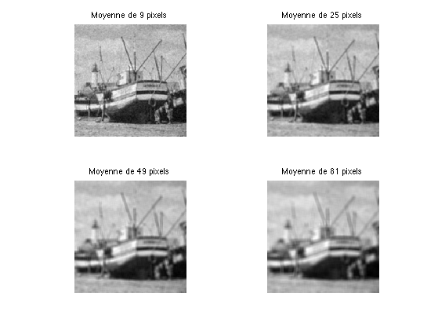
Le moyennage des pixels est très efficace pour enlever le bruit dans les images, malheureusement il détruit également une grande partie de l'information de l'image. on peut en effet s'appercevoir que les images obtenues par moyennage sont floues. Ceci est en particulier visible près des contours, qui ne sont pas nets.
Enlever le bruit par médiane
Afin de réduire ce flou, il faut remplacer le moyennage par une opération un peu plus complexe, que l'on nomme mediane.
Etant donné la valeur \(a\) d'un pixel, et les valeurs \(b,c,d,e,f,g,h,i\), on commence par les classer par ordre croissant.
Dans l'exemple du voisinage de 9 pixels utilisé à la section précédente, on obtient les 9 valeurs classées \[ 47,54,79,153,166,189,190,192,203. \] La médiane des neuf valeurs \(a,b,c,d,e,f,g,h,i\) est la \(5^\text{e}\) valeur de ce classement (c'est-à-dire la valeur centrale de ce classement).
Dans notre cas, la médiane est donc 166. Notez que ce nombre est en général différent de la moyenne, qui vaut, pour notre exemple 141,4.
La figure ci-dessous compare le débruitage obtenu en effectuant la moyenne et la médiane de 9 pixels voisins.
filt_med = @(f,k)perform_median_filtering(f,k); clf; imageplot(clamp(filt_moy(f,1)), 'Moyenne de 9 nombres', 1, 2, 1); imageplot(clamp(filt_med(f,1)), 'Médiane de 9 nombres', 1, 2, 2);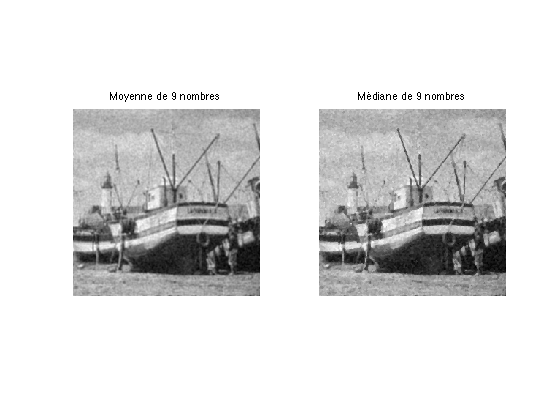
Afin d'enlever plus de bruit, il suffit de calculer la médiane sur un nombre plus grand de pixels voisins, comme montré à la figure suivante.
klist = [1 2 3 4]; clf; for i=1:length(klist) k = klist(i); f1 = filt_med(f,k); imageplot(clamp(f1), ['Médiane de ' num2str((2*k+1)^2) ' pixels'], 2, 2, i); end

On constate que cette méthode est plus performante que le calcul de moyennes, car les images résultantes sont moins floues. Cependant, tout comme avec le calcul de moyennes, si l'on prend des voisinages trop grands, on perd aussi de l'information de l'image, en particulier les bords des objets sont dégradés.
Détecter les bords des objets
Affin de localiser des objets dans les images, il est nécessaire de détecter les bords de ces objets. Ces bords correspondent à des zones de l'image où les valeurs des pixels changent rapidement. C'est le cas par exemple lorsque l'on passe de la coque du bateau (qui est sombre, donc avec des valeurs petites) à la mer (qui est claire, donc avec des valeurs grandes).
Afin de quantifier combien un pixel avec une valeur \(a\) est un bord, on prend en compte les valeurs \(b,c,d,e\) de ses quatre voisins (deux horizontallement et deux verticalements). Dans le cas considéré précédemment, on obtient : \[ \left[ \begin{array}{ccc} & c & \\ b & a & d \\ & e & \end{array} \right] = \left[ \begin{array}{ccc} & 54 & \\ 192 & 190 & 153 \\ & 189 & \end{array} \right] \]
Notons que l'on utilise ici seulement 4 voisins, ce qui est différent du calcul de moyennes et de médianes où l'on utilisait 8 voisins. Ceci est important afin de détecter aussi précisément que possible les bords des objets.
On calcule une valeur \(\ell\) suivant la formule \[ \ell = \sqrt{ (b-d)^2 + (c-e)^2 }. \] Dans notre exemple, on obtient donc \[ \ell= \sqrt{ (192 - 153)^2 + (189 - 54)^2 } = \sqrt{19746} \approx 140,5. \]
On peut remarquer que si \(\ell=0\), alors on a \(b=c\) et \(d=e\). Au contraire, si \(\ell\) est grand, ceci signifie que les pixels voisins ont des valeurs très différentes, le pixel considéré est donc probablement sur le bord d'un objet.
La figure suivante montre l'image obtenue en calculant la valeur \(\ell\) associée à chaque pixel. On a affiché ces valeurs avec du noir quand \(\ell=0\), du blanc quand \(\ell\) est grand, et on a utilisé des niveaux de gris intermédiaire pour les valeurs entre 0 et 1.
n = 256; name = 'hibiscus'; f = load_image(name, n); f = rescale(sum(f,3)); s1 = [1 1:n-1]; s2 = [2:n n]; edge = @(f)sqrt( ( f(s1,:) - f(s2,:) ).^2 + ( f(:,s1) - f(:,s2) ).^2 ); clf; imageplot(f, 'Image', 1,2,1); imageplot(edge(f), 'Carte de l', 1,2,2);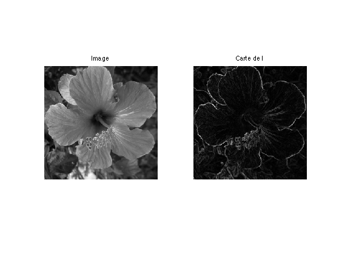
On peut voir que dans l'image de droite, les contours des objets ressortent en blanc, car ils correspondent aux grandes valeurs de \(\ell\).
Les images couleurs
Une image couleur est en réalité composée de trois images indépendantes, afin de représenter le rouge, le vert, et le bleu. Chacune de ces trois image s'appelle un canal. Cette représentation en rouge, vert et bleu mime le fonctionnement du système visuel humain.
La figure suivante montre une image couleur, qui est décomposée en ses trois canaux constitutifs.
name = 'hibiscus'; f = rescale( load_image(name,n) ); f1 = cat(3, f(:,:,1), zeros(n), zeros(n)); f2 = cat(3, zeros(n), f(:,:,2), zeros(n)); f3 = cat(3, zeros(n), zeros(n), f(:,:,3)); clf; imageplot({f f1 f2 f3}, ... { 'Image couleur' 'Canal rouge' 'Canal vert' 'Canal bleu'}, 2, 2);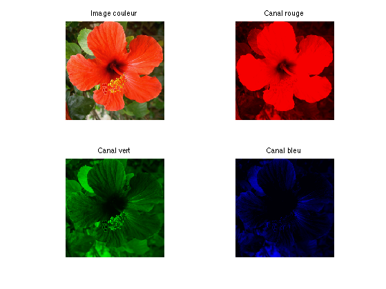
Chaque pixel de l'image couleur contient ainsi trois nombres \( (r,v,b) \), chacun étant un nombre entier entre 0 et 255. Si le pixel est égal à \((r,v,b)=(255,0,0)\), il ne contient que de l'information rouge, et est affiché comme du rouge. De façon similaire, les pixels valant \((0,255,0)\) et \((0,0,255)\) sont respectivement affichés vert et bleu.
On peut afficher à l'écran une image couleur à partir de ses trois canaux \((r,v,b)\) en utilisant les règles de la synthèse additive des couleurs. La figure suivante montre les règles de composition cette synthèse additive des couleurs. Par exemple un pixel avec les valeurs \((r,v,b)=(255,0,255)\) est un mélange de rouge et de vert, il est donc affiché comme du jaune.
On peut calculer une image en niveau de gris à partir d'une image couleur en moyennant les trois cannaux. On calcule donc une valeur \[ a = \frac{r+v+b}{3} \] qui s'appelle la luminance de la couleur.
La figure suivante montre le passage d'une image couleur à une image de luminance en niveau de gris.
clf;
imageplot({f sum(f,3)}, {'Couleur' 'Luminance'});

Une autre représentation courante pour les images couleurs utilise comme couleurs de base le cyan, le magenta et le jaune. On calcule les trois nombres \((c,m,j)\) correspondant à chacun de ces trois canaux à partir des canaux rouge, vert et bleu \((r,v,b)\) comme suit \[ c=255-r, \quad m=255-v, \quad j=255-b. \] Par exemple, un pixel de bleu pur \((r,v,b)=(0,0,255)\) va devenir \( (c,m,j)=(255,255,0) \). La figure suivante montre les trois canaux \((c,m,j)\) d'une image couleur.
g = 1-f;
f1 = cat(3, f(:,:,1), f(:,:,2)*0+1, f(:,:,3)*0+1);
f2 = cat(3, f(:,:,1)*0+1, f(:,:,2) , f(:,:,3)*0+1);
f3 = cat(3, f(:,:,1)*0+1, f(:,:,2)*0+1, f(:,:,3));
clf;
imageplot({f f1 f2 f3}, ...
{ 'Image couleur' 'Canal cyan' 'Canal magenta' 'Canal jaune'}, 2, 2);
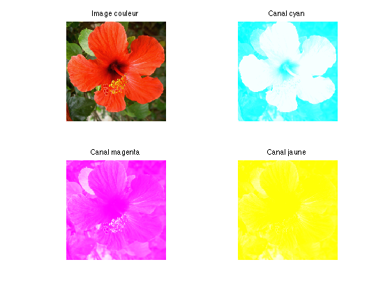 Afin d'afficher une image couleur à l'écran à partir des trois canaux \((c,m,j)\), on doit utiliser la synthèse soustractive des couleurs. La figure suivante montre les règles de composition cette synthèse soustractive. Notons que ces règles sont celles que l'on utilise en peinture, lorsque l'on mélange des pigments colorés. Le cyan, le magenta et le jaune sont appelés couleurs primaires.
On peut donc stocker sur un disque dur une image couleur en stockant les trois canaux, correspondant aux valeurs \((r,g,b)\) ou \((c,m,j)\). On peut modifier les images couleur tout comme les images en niveaux de gris. La façon la plus simple de procéder consiste à appliquer la modification à chacun des canaux.
Changer le contraste d'une image
Il est possible de faire subir différentes modifications à l'image afin de changer son contraste.
name = 'hibiscus';
f = rescale( load_image(name,n) );
f = rescale(sum(f,3));
Un exemple simple consiste à remplacer chaque valeur \(a\) d'un pixel d'une image par \(255-a\) ce qui correspond à la couleur opposée. Le blanc devient noir et vice-et-versa, ce qui donne un effet similaire à celui des négatifs d'appareils photos argentiques.
clf; imageplot(-f);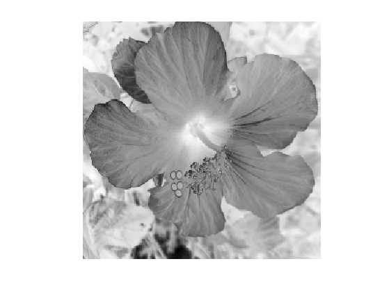
Sans aller jusqu'à des modifications aussi extrêmes, on peut assombrir une image en remplçant la valeur \(a\) de chaque pixel par son carré \(a^2 = a \times a\).
Ce faisant, les valeurs résultantes ne sont plus dans \(0,\ldots,255\) mais dans \(0,\ldots,255^2=65025\). Afin d'afficher l'image à l'écran on va donc utiliser des niveaux de gris allant du noir pour 0 au blanc pour 65025.
clf;
imageplot(f.^2, 'Carré');
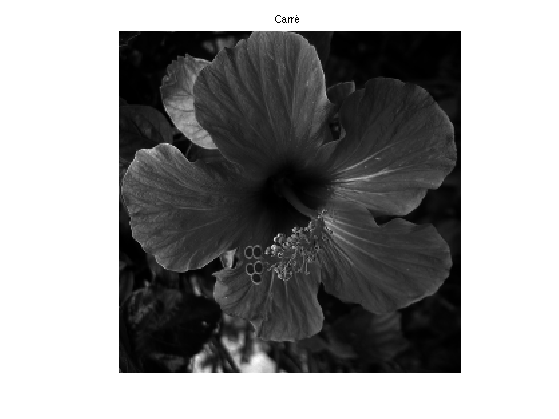 Afin d'éclaircir l'image, on peut remplacer chaque valeur \(a\) par sa racine carrée \(b = \sqrt{a}\). Cette valeur \(b\) est un nombre, qui n'est plus nécessairement entier, qui satisfait \(b \times b = a\).
La figure suivante montre l'éclaircissement obtenu. Les valeurs de l'image éclaircie sont dant \(0,\ldots,\sqrt{255} \approx 16\), et on utilise donc des niveaux de gris allant du noir (pour 0) au blanc (pour 16).
clf;
imageplot(sqrt(f), 'Remplacement de a par sqrt(a)');
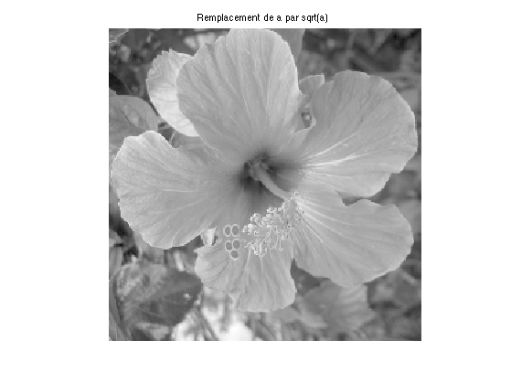 On pourra noter que l'on a \[ \sqrt{a} \times \sqrt{a} = a \quad\text{et}\quad \sqrt{a \times a}=a \] de sorte que si l'on réalise un éclairsissement suivit d'un assombrissement (ou dans le sens inverse) on retrouve l'image d'origine. Ces deux opérations sont inverses l'une de l'autre.
On peut également changer le contraste d'une image couleur en changeant sa composante de luminance.
name = 'hibiscus'; f = rescale( load_image(name,n) ); m = @(f)repmat(mean(f,3), [1 1 3]); contrast = @(f,gamma)clamp(m(f).^gamma + f-m(f)); gamma_list = [.5 .75 1 1.5 2 3]; clf; for i=1:length(gamma_list) subplot(2,3,i); image(contrast(f,gamma_list(i))); axis image; axis off; title(['\gamma=' num2str(gamma_list(i))]); colormap jet(256); end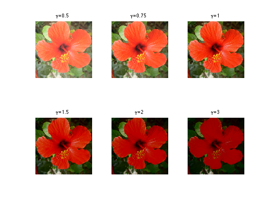
Transformations géométriques
Une image est un tableau de nombres, avec \(n\) lignes et \(p\) colonnes. Il est donc facile d'effectuer certaines transformations géométriques sur l'image.
Les valeurs des pixels qui composent ce tableau (noté \(A\)) peuvent être représentées sous la forme \( A = ( a_{i,j} )_{i,j} \) ou l'index \(i\) décrit l'ensemble des nombres \( \{1,\ldots,n\} \) (les entiers entre 1 et n) et l'index \(j\) les nombres \( \{1,\ldots,p\} \). One dit que \(a_{i,j}\) est la valeur du pixel à la position \((i,j)\).
Le tableau de pixels ainsi indexé peut se représenter sous la façon suivante \[ A = \begin{pmatrix} a_{1,1} & & & & a_{1,p}\\ & & \vdots & & \\ & & a_{i-1,j} & & \\ \ldots & a_{i,j-1} & a_{i,j} & a_{i,j+1} & \ldots\\ & & a_{i+1,j} & & \\ & & \vdots & & \\ a_{n,1} & & & & a_{n,p}\\ \end{pmatrix} \] ce qui montre que le pixel en haut à gauche de l'image correspond à la valeur \(a_{1,1}\). Ceci correspond à la représentation de l'image sous forme d'une matrice.
Si l'on échange le rôle des lignes et des colonnes, on définit un autre tableau \(B\) avec \(p\) lignes et \(n\) colonnes. La formule qui définit le tableau \(B = ( b_{j,i} )_{i,j}\) est \[ b_{j,i} = a_{i,j}. \] Ceci correspond à la transposition de la matrice correspondant à l'image.
Pour une image couleur, on effectue cette modification sur chacune de ses trois composantes couleur R, V et B.
La figure suivante montre l'image correspondant au tableau \(A\) et l'image correspondant au tableau \(B\). On peut constater que la modification correspond à faire sur l'image une symétrie par rapport à la diagonale qui joint le coin haut/gauche au coin bas/droite.
A = rescale( load_image('flowers',512) ); B = permute(A, [2 1 3]); clf; imageplot({A B}, {'Image A' 'Image B'}, 1,2,1);

On peut également effectuer une rotation d'un quart de tour dans le sens d'une montre à l'image. Ceci est effectué en définissant une image \(C = (c_{i,j})_{j,i}\) de \(p\) lignes et \(n\) colonnes dont le tableau de nombre est calculé par \[ c_{j,i} = a_{n-i+1,j}.\]
C = A;
C = C(end:-1:1,:,:); C = permute(C, [2 1 3]);
clf;
imageplot({A C}, {'Image A' 'Image C'}, 1,2,1);
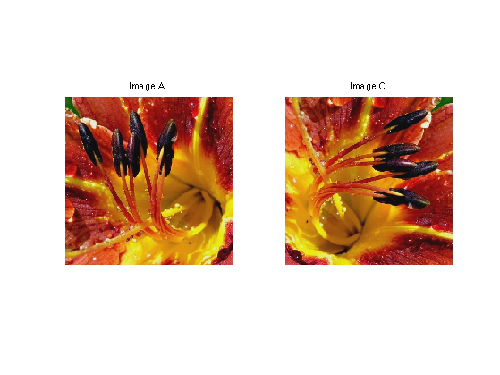 Fondu entres deux images
On souhaite effectuer une transition entre deux images \(A\) et \(B\) de même taille. On suppose donc que chaque image a le même nombre \(n\) de lignes et le même nombre \(p\) de colonnes.
La figure ci-dessous montre les deux images entre lesquelles on souhaite calculer une transition.
A = rescale( load_image('flowers',512) ); B = rescale( load_image('hibiscus',512) ); clf; imageplot({A B}, {'Image A', 'Image B'});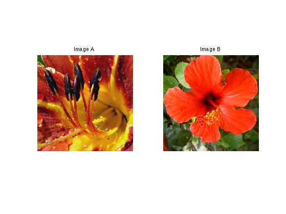
One note \(A = (a_{i,j})_{i,j}\) les pixels de l'image \(A\) et \(B = (b_{i,j})_{i,j}\) les pixels de l'image \(B\).
Pour une valeur \(t\) fixée entre \(0\) et \(1\), on définit l'image \(C = (c_{i,j})_{i,j}\) comme \[ c_{i,j} = (1-t) a_{i,j} + t b_{i,j}.\] Il s'agit de la formule d'une interpolation linéaire entre les deux images.
Si l'image est une image couleur, on applique cette formule à chacun des canaux R, V et B.
On peut constater que pour \(t=0\), l'image \(C\) est égale à l'image \(A\). Pour \(t=1\), l'image \(c\) est égale à l'image \(B\). Lorsque la valeur \(t\) progresse de 0 à 1, on obtient ainsi un effet de fondu, puisque l'image, qui au départ est proche de l'image \(A\) ressemble de plus en plus à l'image \(B\).
La figure suivante montre 5 valeurs de \(t\) réparties entre 0 et 1.
p = 6; t = linspace(0,1,p); clf; for i=1:p imageplot(t(i)*A+(1-t(i))*B, ['t=' num2str(t(i), 2)], 2,p/2,i); end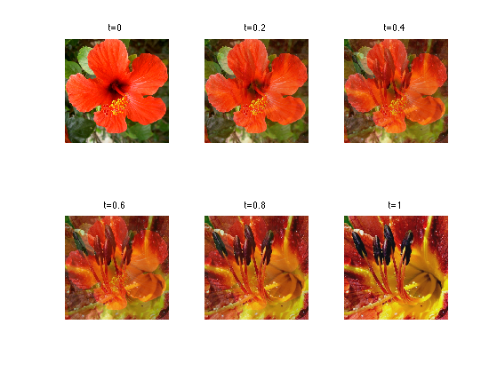
Conclusion
Cet article n'a fait qu'effleurer l'immense liste des traitements que l'on peut faire subir à une image. Le traitement mathématique des images est un domaine très actif, où les avancées théoriques se concrétisent sous la forme d'algorithmes rapides de calcul qui ont des applications importantes pour la manipulation des contenus numériques.
Les personnes intéressées pourront consulter le site web A Numerical Tour of Signal Processing pour de nombreux exemples de traitements d'images. On y trouve également des liens vers d'autres ressources disponibles en ligne.
Glossaire
- Aléatoire : valeur imprévisible souvent due au hazard, comme par exemple le bruit qui perturbe les images de mauvaises qualités.
- Bit : unité élementaire de stockage de l'information sous forme de 0 et de 1 dans un ordinateur.
- Canal : une des trois images élémentaires qui composent une image couleur.
- Bords : zone d'une image où les valeurs des pixels varient beaucoup, qui correspond aux contours des objets qui forment l'image.
- Bruit : petites perturbations qui dégradent la qualité d'une image.
- Carré : le carré \(b\) d'une valeur \(a\) est \(a \times a\). Il est noté \(a^2\).
- Contraste : quantité informelle qui indique la différence entre les zones claires et les zones sombres d'une image.
- Compression d'image : méthode permettant de réduire la place mémoire nécessaire au stockage sur le disque dur d'une image.
- Ecriture binaire : écriture de valeurs numériques à l'aide uniquement de 0 et de 1.
- Flou : dégradation d'une image qui rend les contours des objets peu net, et donc difficile à localiser précisément.
- Fondu : interpolation linéaire entre deux images.
- Image couleur : ensemble de trois images en niveau de gris, qui peut être affiché à l'écran en couleur.
- Image numérique : tableau de valeurs que l'on peut afficher à l'écran en assignant un niveau de gris à chaque valeur.
- Inverse : opération ramenant une image dans son état d'origine.
- JPEG-2000 : méthode récente de compression d'images qui utilise une transformation en ondelettes.
- Luminance : moyenne des différents canaux d'une image, qui indique la puissance lumineuse du pixel.
- Matrice : tableau de valeurs, représenté sous la forme \((a_{i,j})_{i,j}\).
- Médiane : valeur centrale lorsque l'on classe par ordre croissant un ensemble de valeurs.
- Moyenne : la moyenne d'un ensemble de valeurs est leur somme divisée par leur nombre.
- Niveaux de gris : nuances de gris utilisées pour afficher à l'écran une image numérique.
- Nombres entiers : nombres 0, 1, 2, 3, 4 ...
- Octet : ensemble de huit bits consécutifs.
- Ondelettes : transformation de l'image qui est utilisée par la méthode JPEG-2000 de compression d'images.
- Ordre croissant : classement d'un ensemble de valeurs de la plus petite à la plus grande.
- Pixel : une case dans un tableau de valeurs correspondant à une image numérique.
- Quantification : procédé consistant à réduire l'ensemble des valeurs possibles d'une image numérique.
- Racine carrée : la racine carrée \(b\) d'une valeur positive \(a\) est la valeur positive \(b\) vérifiant \(a=b \times b\). On la note \(\sqrt{a}\).
- Résolution : taille d'une image (nombre de pixels).
- Sous-exposée : photographie d'une scène trop sombre pour laquelle l'objectif photographique n'est pas resté assez longtemps ouvert.
- Synthèse additive : règle permettant de construire une couleur quelconque à partir des trois couleurs rouge, vert et bleu. C'est la règle qui régit le mélange des couleurs de faisceaux lumineux utilisés pour l'éclairage d'un mur blanc.
- Synthèse soustractive : règle permettant de construire une couleur quelconque à partir des trois couleurs cyan, magenta et jaune. C'est la règle qui régit le mélange des couleurs en peinture.